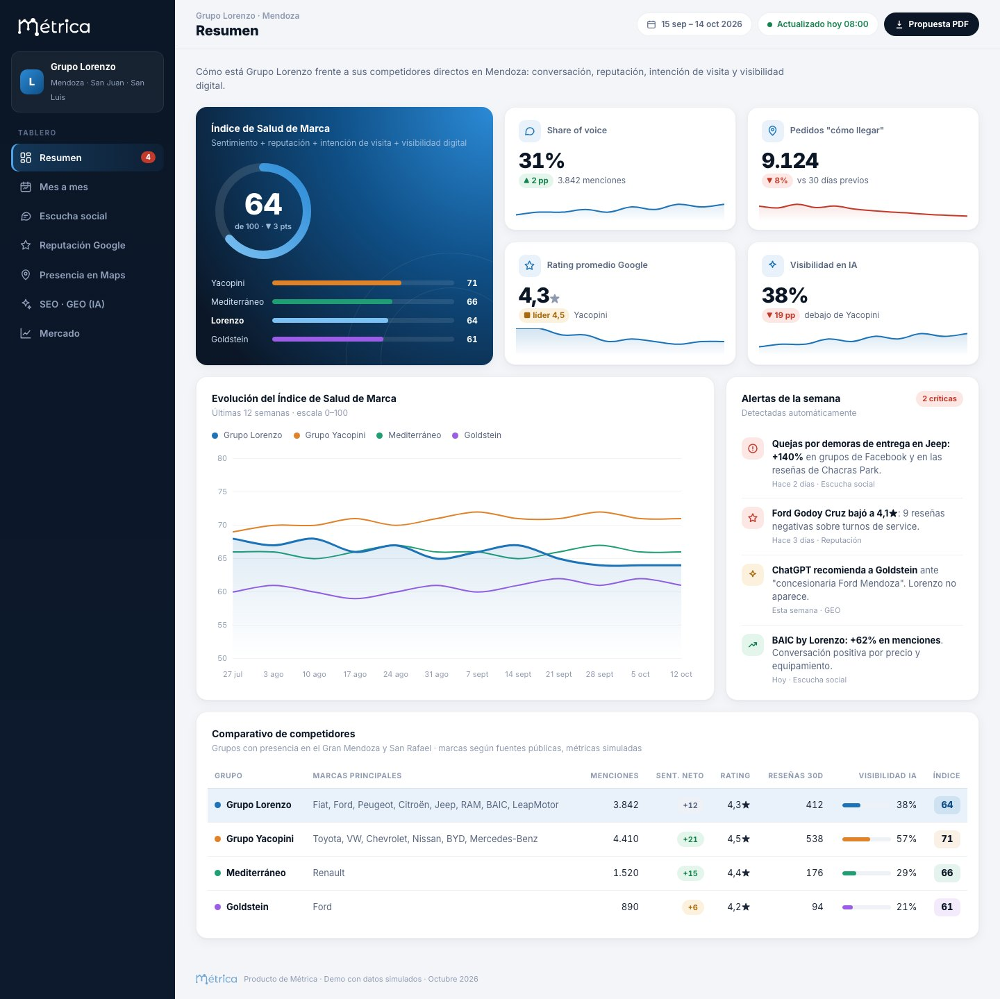
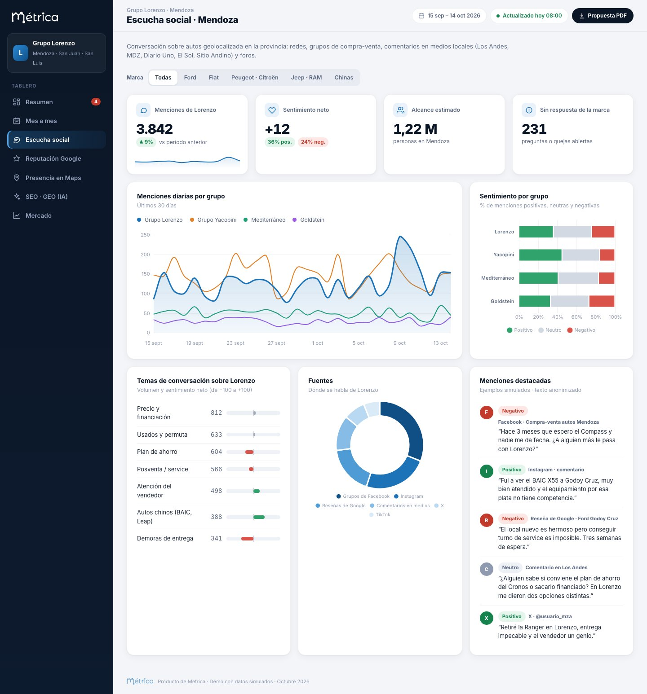
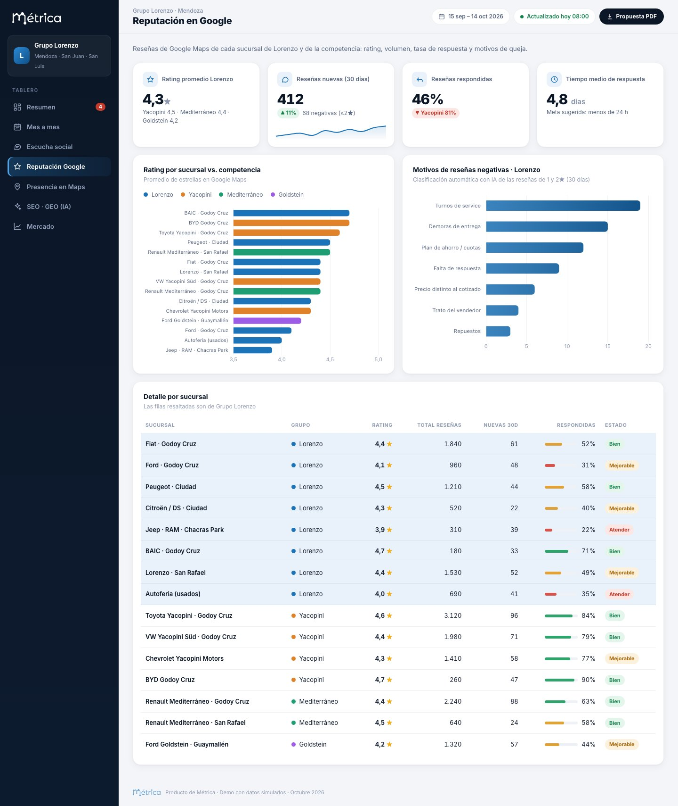
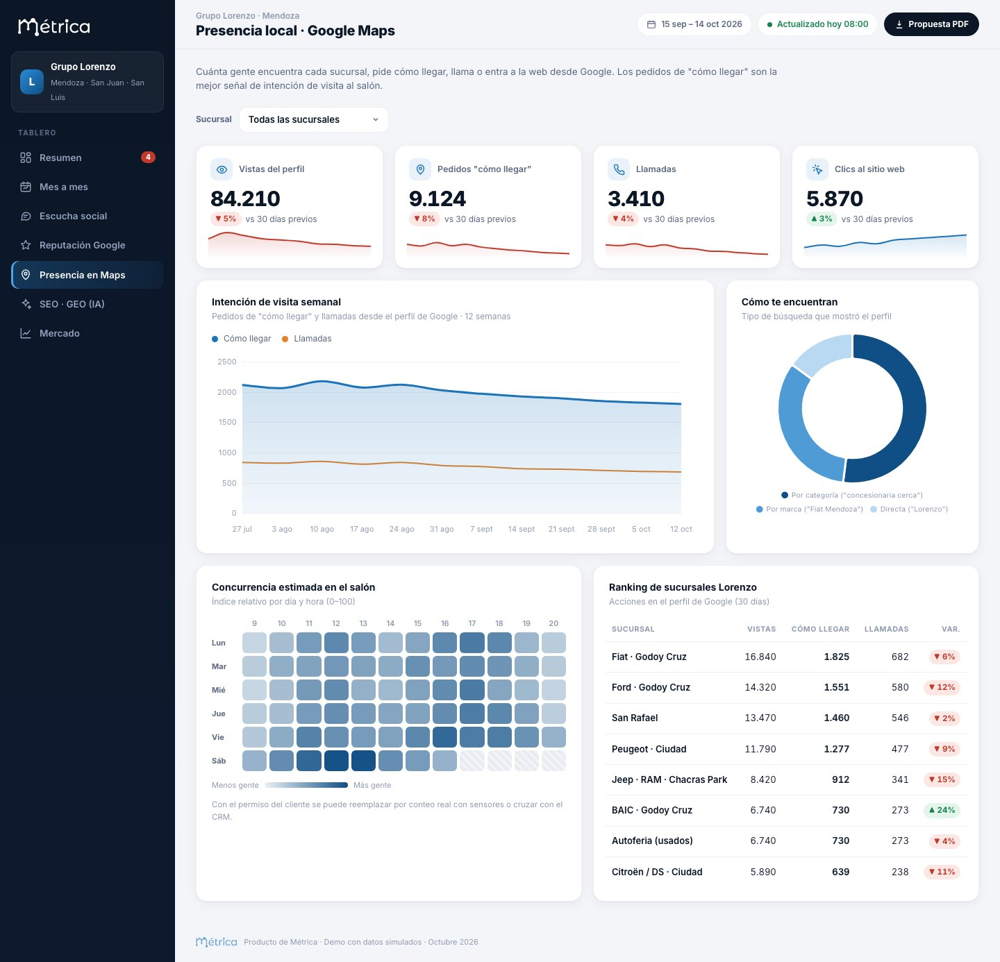

PROPUESTA PARA GRUPO LORENZO
Producto Métrica
Tablero de Control
Automotor · Mendoza
Escucha social, reputación, intención de visita, visibilidad en buscadores e inteligencia artificial, y mercado. Lorenzo frente a su competencia, en un solo lugar.

Octubre 2026 · Documento explicativo · Las pantallas muestran una demo con datos simulados
El contexto
En un mercado que se achica, gana el que le saca clientes a otro
La venta de 0 km en Mendoza viene en baja y el comercio acumula más de un año y medio de caída. Cuando el mercado no crece, cada comprador que elige a otro concesionario es una venta perdida. Para no perderla hay que saber, con datos, qué pasa antes de que llegue al salón.
−24,6%
patentamientos de 0 km en mayo de 2026 frente a mayo de 2025 en Mendoza
−13,4%
junio de 2026 interanual, aunque fue el mejor mes del año
+25%
crecimiento de los patentamientos de motos: el segmento que sí crece
Lo que hoy no se ve
- Qué dicen de Lorenzo los mendocinos en grupos de Facebook, Instagram, TikTok y en los comentarios de los diarios locales.
- Por qué un cliente deja una reseña de 1★ y si alguien le respondió.
- Cuánta gente pidió "cómo llegar" a cada sucursal esta semana frente a la anterior.
- Si ChatGPT o Google recomiendan a Lorenzo o a la competencia cuando alguien pregunta "¿dónde compro un Ford en Mendoza?".
- Cómo se mueve la cuota de cada marca y de cada grupo en la provincia.
Lo que proponemos
Un tablero de control único, actualizado todos los días, que reúne esas cinco miradas y compara a Lorenzo con sus competidores directos en Mendoza. Se ve por marca y por sucursal, así cada gerente sigue lo suyo y la dirección ve el panorama completo.
Además del tablero, el servicio incluye alertas automáticas y un informe con recomendaciones para que los datos se conviertan en acciones concretas: responder reseñas, corregir fichas, publicar contenido o reforzar una sucursal.
Fuentes de los datos de contexto: ACARA y SIOMAA, publicados por Diario Uno y Sitio Andino (junio y julio de 2026), y la Federación Económica de Mendoza.
Tablero de Control Automotor · Grupo Lorenzo2
Cómo está armado
Siete solapas, una sola pregunta: ¿cómo estamos frente a la competencia?
Cada solapa responde algo concreto del negocio. La primera resume todo en un índice y en alertas, y el resto permite profundizar.
1
Resumen
El Índice de Salud de Marca (0–100) combina sentimiento, reputación, intención de visita y visibilidad digital. Incluye el ranking de grupos y las alertas de la semana.
2
Mes a mes
Evolución mensual de todos los indicadores y el antes y después de cada acción del grupo, comparado con el líder.
3
Escucha social · Mendoza
Menciones, sentimiento y temas de conversación de autos solo en la provincia, con filtro por marca.
4
Reputación Google
Rating, reseñas nuevas, tasa y tiempo de respuesta y motivos de queja, por sucursal propia y de la competencia.
5
Presencia local · Maps
Vistas, pedidos de "cómo llegar", llamadas y clics por sucursal, más la concurrencia estimada por día y hora.
6
SEO · GEO (IA)
Posiciones en Google y un seguimiento de lo que ChatGPT, Gemini, Perplexity y Google IA responden a los compradores.
7
Mercado
Patentamientos en Mendoza, cuota por marca y por grupo, avance de las marcas chinas y precios de usados.
Competencia monitoreada
| Grupo | Marcas | Por qué importa |
|---|
| Grupo Lorenzo | Fiat, Ford, Peugeot, Citroën, DS, Jeep, RAM, BAIC, LeapMotor, Autoferia | El cliente |
| Grupo Yacopini | Toyota, Volkswagen, Chevrolet, Nissan, BYD, Mercedes-Benz | El grupo más grande de Cuyo y el rival directo en marcas chinas (BYD) |
| Mediterráneo | Renault | Fuerte en el segmento de autos chicos y con presencia en San Rafael |
| Goldstein | Ford | Competidor directo de la misma marca en el Gran Mendoza |
La lista de competidores es preliminar y se arma con información pública. Se ajusta junto con Lorenzo al inicio del trabajo y puede sumar otras concesionarias, agencias de usados o grupos de San Juan y San Luis.
Tablero de Control Automotor · Grupo Lorenzo3
Módulo 1 · Escucha social
Qué se dice de Lorenzo en Mendoza, y de los demás

Qué responde
- ¿Se habla más o menos de nosotros que de Yacopini?
- ¿Qué temas generan quejas: plan de ahorro, entregas, service?
- ¿Qué conversaciones quedaron sin respuesta de la marca?
- ¿Cómo se recibe el lanzamiento de una marca nueva, como BAIC o Jeep en Chacras?
Fuentes
Grupos de Facebook de compra-venta y de ahorristas de Mendoza, Instagram, TikTok, X, comentarios en Los Andes, MDZ, Diario Uno, El Sol y Sitio Andino, y reseñas de Google. El filtro geográfico se apoya en cuentas, lugares y menciones locales (Godoy Cruz, Luján, San Rafael, etc.).
Tablero de Control Automotor · Grupo Lorenzo4
Módulo 2 · Reputación en Google
Cada reseña es una vidriera: medirla por sucursal

Qué responde
- ¿Qué sucursal está bajando de rating y por qué?
- ¿Respondemos las reseñas y en cuánto tiempo?
- ¿Cuáles son los motivos de queja más repetidos, clasificados con IA?
- ¿Cómo estamos frente a la sucursal de la competencia más cercana?
Cómo se usa
Alertas ante cada reseña negativa, un tablero de respuestas pendientes por sucursal y un informe mensual de motivos para que posventa y ventas corrijan el origen del problema.
Tablero de Control Automotor · Grupo Lorenzo5
Módulo 3 · Presencia local en Google Maps
Intención de visita: quién quiere venir al salón

Qué responde
- ¿Cuánta gente pidió "cómo llegar" o llamó a cada sucursal esta semana?
- ¿Nos encuentran por categoría ("concesionaria cerca") o solo los que ya nos conocen?
- ¿Qué días y horarios concentran más gente, para planificar vendedores y acciones?
Datos que necesitamos
Acceso de lectura a los perfiles de Google Business de las sucursales. Más adelante se puede reemplazar el índice de concurrencia por conteo real con sensores en el salón o cruzarlo con el CRM para medir la conversión de visita a venta.
Tablero de Control Automotor · Grupo Lorenzo6
Cómo trabajamos
De la foto inicial al tablero en funcionamiento
Proponemos avanzar por etapas para que Lorenzo vea valor desde la primera semana, sin esperar a tener todo integrado.
Etapa 1
Diagnóstico inicial
Una foto del punto de partida hecha con datos públicos: reputación de todas las sucursales y de la competencia, prueba de visibilidad en IA, estado de las fichas de Google y una muestra de escucha social.
Etapa 2
Piloto
Tablero activo para 2 o 3 marcas prioritarias (por ejemplo Ford, Jeep y BAIC) con alertas e informes. Sirve para validar indicadores, umbrales y formatos con el equipo.
Etapa 3
Implementación completa
Todas las marcas y sucursales, integración con Google Business y, si se decide, con el CRM y el conteo de visitas. Seguimiento continuo y recomendaciones.
Entregables
- Tablero web con acceso para dirección y gerentes, actualizado todos los días.
- Alertas automáticas: picos de quejas, reseñas negativas y cambios de visibilidad.
- Informe semanal breve con lo más relevante.
- Informe mensual con análisis y recomendaciones accionables.
- Reunión mensual de revisión con el equipo de Lorenzo.
Qué necesitamos de Lorenzo
- Un referente del grupo para validar marcas, sucursales y prioridades.
- Acceso de lectura a los perfiles de Google Business de las sucursales.
- Acceso a las cuentas de redes sociales de cada marca, si se quiere sumar sus métricas internas.
- Acceso a Google Search Console y Analytics del sitio, para SEO.
- Opcional: exportación periódica de leads o ventas del CRM.
Todo el trabajo cumple las condiciones de uso de cada plataforma. La escucha social analiza contenido público y no recolecta datos personales de los usuarios: se trabaja con volúmenes, temas y sentimiento.
Tablero de Control Automotor · Grupo Lorenzo10
Próximos pasos
Empezar por la foto inicial
Con información pública podemos mostrarle a Lorenzo, en pocos días, dónde está parado frente a su competencia en reputación, conversación y visibilidad en IA. Es la mejor forma de evaluar el producto con datos propios.
1 · Reunión de alcance
Definir marcas, sucursales y competidores prioritarios.
2 · Diagnóstico inicial
Entrega de la foto inicial con hallazgos y oportunidades rápidas.
3 · Piloto
Tablero activo en las marcas elegidas, con alertas e informes.
Las pantallas de este documento corresponden a una demo con datos simulados con fines ilustrativos. Las cifras de contexto de mercado de la página 2 provienen de fuentes públicas. Los alcances y condiciones comerciales se definirán en una propuesta posterior.
Métrica · Octubre 2026Tablero de Control Automotor · Grupo Lorenzo11